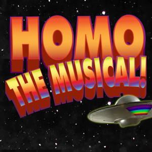

past performance | ||
|  |
HOMO the Musical! Written and Directed By Lola Rock-N-Rolla A quaint religious, middle American suburb is in for quite a shock when it is infiltrated by an alien from the "PLANET HOMO" posing as a suburban housewife. Alien invasions! Gay wrestling! Raucous church choirs! Cheerleader blood baths! Live rock-n'roll! and horny suburban housewives all to song and dance! Created by B-Movie filmmaker and NYC’s answer to John Waters, Lola Rock-N-Rolla, (Dragzilla,Night of the Living Gay, Nefertitty) and seminal punk guitar player and songwriter, Gina Volpe, (Lunachicks/Bantam) pooling their talents together in homage to Hedwig and The Rocky Horror Picture Show to make the next cult hit “Homo the Musical!” | |
upcoming performances |
|||
 |
|||
| EVQ Film Festival 2018 August 20-25 |
|||
performance archives |
|||
| 2018 | 2017 | 2016 | 2015 |
| 2014 | 2013 | 2012 | 2011 |
| 2010 | 2009 | 2008 | 2007 |